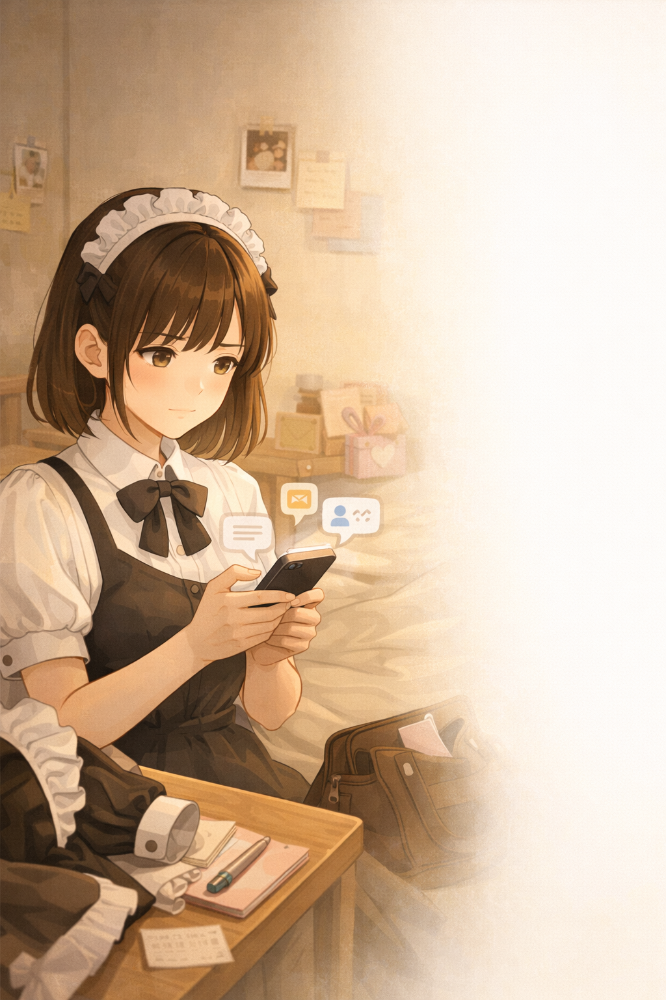
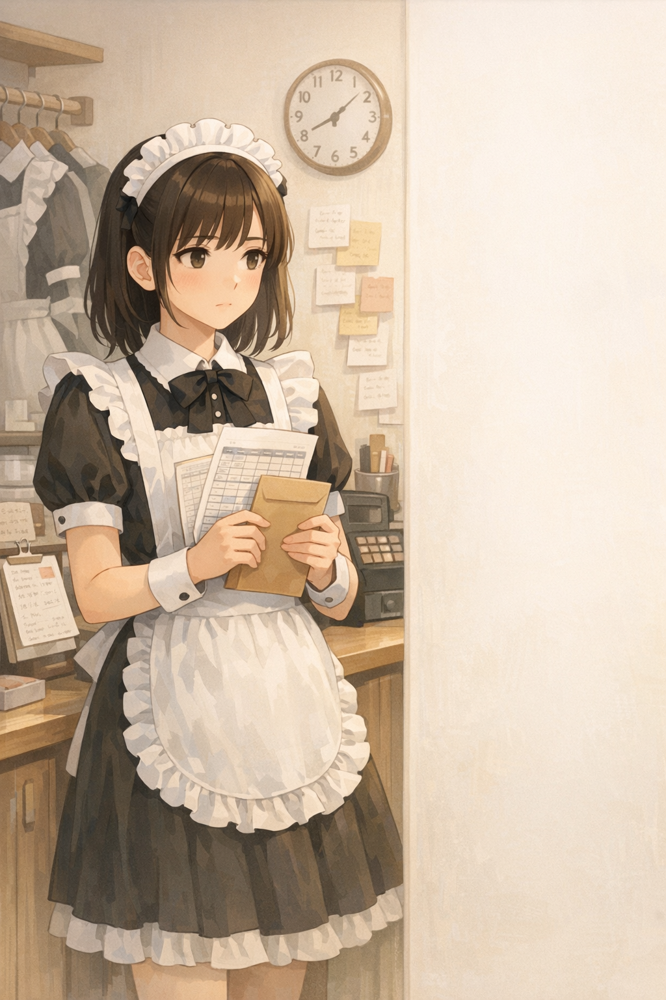

新聞專題報導 ・ MAID CAFE IN TAIWAN
新聞專題報導 ・ MAID CAFE IN TAIWAN
【記者陳少凡、黃暐喬、陳雙、顏貝恩報導】「主人／大小姐，歡迎回家！」踏入女僕咖啡廳（以下簡稱僕咖），迎面而來的是女僕親切的笑容與問候。帶位入座後，女僕會輕輕靠在桌邊，細心介紹餐點，讓人彷彿瞬間進入了莊園，女僕從旁服務顧客。
桌上擺放著菜單與搖鈴，顧客隨時可以透過搖鈴呼喚專屬的女僕前來服務，這樣的設計，也讓互動多了一層儀式感。
提到僕咖的經典料理，蛋包飯往往是最具代表性的選擇。女僕會在一旁引導顧客一同念出咒語：「おいしくな〜れ！❤（變好吃吧，萌萌心動！❤）」，並搭配手勢，在蛋包飯上淋上番茄醬，完成所謂的「施魔法」儀式。這樣的過程，對初次到訪的客人而言既新奇又有趣，也因為能夠與女僕產生互動，而顯得格外特別。
「因為喜歡動漫，看到裡面有個喜歡的角色去女僕咖啡廳工作，覺得她的衣服好可愛，就想著自己也去試試看。」談及踏入女僕咖啡廳的契機，可可（化名）笑容滿面地說道。對於可可來說，踏入女僕咖啡廳的起點，是動漫裡一個身著女僕裝的角色。
原本只是抱著「試試看」的心情入行，可可卻意外發現這份工作的種種驚喜：除了衣服如預期中的可愛，每天上班都能精心打扮、工時相對彈性，還能拍下許多美麗的照片，甚至有人願意為此買單。店內不定期舉辦的特別表演活動，像是可以被指定上台唱歌跳舞，讓他在過程中享受到萬眾矚目的感覺，彷彿真實走進了當初偶像動漫裡的夢幻場景。「我覺得很好玩，還能收到大家的禮物，也常常能收到甜點。」他說，粉絲們總是帶著禮物與點心前來，用這份心意表達對女僕們的喜愛。
「在這裡，可以明顯感受到他們是開心的。我可以認識不同的人，聊不同的話題。」可可也分享，工作中因為與客人聊天學到了很多，並且不同於一般餐飲服務多半停留在點餐與送餐，女僕需要主動靠桌與顧客聊天，記住對方的名字與習慣，甚至在一次次見面中延續對話。對此，可可認為這不只是表面的應對，而更像是一種帶著真心的交流，也讓這份工作多了一份情感上的連結。

僕咖源自日本秋葉原的御宅族文化，將ACG（Anime、Comic、Game）中對女僕角色的想像搬入現實。透過服裝、語言與互動，男性顧客被稱為「主人」，女性顧客則被稱為「大小姐」，女僕也因此成為從虛構世界走出來的獨特存在。這樣的空間，讓人得以短暫抽離日常生活，進入非現實的情境中。台灣女僕文化從早期的小眾同好聚集，演變為一種結合餐飲與互動體驗的娛樂型態。
「基本上就是收送餐、畫盤（用巧克力醬或番茄醬作畫）、施魔法、招呼客人、靠桌聊天、調製飲料、幫客人拍照。」女僕小沙（化名）細數工作內容，他笑著說，這是一份「很夢幻、也很美好」的工作。女僕與一般咖啡廳員工的職責差異不大，但最特別之處在於，送上餐點之餘，他們提供的更是一種「情緒價值」。
走進店內，女僕多半是二十歲出頭的年輕女性，而各自選擇加入女僕咖啡廳的原因，她們答案也出奇地一致，「衣服很可愛，可以每天打扮得漂漂亮亮。」、「排班很彈性，可以配合課表。」、「收入好像比一般餐飲業多一點。」對許多仍在就學的大學生而言，女僕咖啡廳提供了一個相對自由彈性，同時也能盡情展現自我風格的工作場域。
然而，這份「光鮮亮麗」的工作，並非所有人都能理解與接受。
小沙提及自己剛入職時的家庭衝突，「我18歲就開始當女僕，一開始爸媽知道之後非常反對，甚至為了這件事大吵了一架，還離家出走。」他說，家人將女僕咖啡廳視為遊走在灰色地帶的產業，與茶店、禮服店等工作產生聯想。對於不熟悉這類文化的人而言，女僕的服裝與顧客之間的親密互動，往往容易被誤解與放大檢視。
在外界眼中，這份工作既夢幻，也難免帶著爭議；女僕們在僕咖「服侍」的日常裡，隱藏著許多不為人知的困境。
僕咖常被形容為一個為顧客打造的「異世界」。「大小姐」、「主人」這些稱謂不僅營造出獨特的氛圍，也在建立起女僕與客人之間的「主僕關係」，讓顧客感受到自己處於被服務與關注的焦點。對此，幻戀女僕咖啡廳負責人璃茉（化名）表示：「僕咖本質上還是餐飲業，只是服裝比較精緻，空閒時間會和客人聊天，有點像偶像互動的感覺。」儘管這樣的關係設定強調互動，正統的僕咖會對女僕與客人的互動設下明確界線，例如：禁止顧客觸碰女僕、女僕也不得坐在顧客身旁、不能等待女僕下班等，以維持一定的距離與安全。
然而，這樣的角色關係延伸至現實生活時，界線有時也會變得模糊。女僕蘋果派（化名）分享，曾有同事在下班後由男友從台北接送回桃園住處，卻遭顧客一路尾隨，事後還收到私訊追問接送者的身分。這樣的舉動不僅打破了本應存在於店內的角色界線，也讓女僕的人身安全面臨潛在威脅。
曾有七年女僕資歷的璃茉也坦言，自己在剛入行、尚未熟悉如何拿捏與顧客的關係時，曾經會反覆自我懷疑：「顧客喜歡我，但我卻無法回應，是不是我自己的問題？」然而，隨著經驗累積，他逐漸學會劃清女僕與顧客的邊界，例如明確告知不接「戀愛客」，以免陷入與顧客產生難以收拾的情感糾葛。「僕咖是提供情緒價值的地方，但不要把裡面發生的一切當成真實。」璃茉強調，雖然女僕與顧客之間的親近程度可能影響業績表現，但他認為雙方仍須清楚理解這段關係的本質，才能避免讓自己越陷越深。

女僕提供的情緒價值，往往不只停留在店內，而是延伸至下班之後。為了維繫既有客群並吸引新客源，女僕必須在下班後的時間持續經營社群帳號，他們被迫隨時守著手機、保持在線，這種隱形成本已轉化為沉重的負擔。女僕小美（化名）坦言：「壓力就是你會覺得可能要一直盯著手機啊！就是一定要上線。」這種數位勞動也引發了權力不對等的情感勒索，若女僕未能即時回覆訊息，常會遭到標籤化的負面評價，蘋果派指出：「有些客人會很在意你沒有回他訊息，這件事情可能他（顧客）會覺得你很功利、很現實，因為（他們會覺得女僕的服務）一定要到店裡要花了錢，才能跟你講到話。」在顧客的認知中，即時回訊是女僕應盡的本職工作，若未達標即被視為失職。儘管女僕們能理解顧客對陪伴的渴望，但他們也強烈希望對方能理解勞動的界線。在脫下制服後，他們同樣需要享受純粹的休息時光。蘋果派表示，雖然這份工作的隱形壓力極大，但她選擇維持心理邊界，若顧客過於在意回訊頻率，他會禮貌地表示雙方「沒有緣分」，藉此過濾掉對私生活過度干擾的顧客。
壓力不只來自顧客的期待，女僕圈內的匿名社群「靠北女僕」，也是許多人揮之不去的陰影。由於這個圈子人員流動頻繁，女僕的工作表現、私下行蹤，都可能被人截圖上傳、討論。小美分享，曾有女僕與男友約會時遭人偷拍，照片流出後還被嘲諷「有男朋友還來當女僕」，反映出部分顧客對女僕「必須純淨、不能有私生活」的扭曲想像。這樣的輿論壓力，讓女僕即使下了班，也難以真正卸下包袱。
窺探有時甚至從網路蔓延至現實。「像我之前有跟顧客說過讀哪所學校，然後有天他突然私訊我：『那天在你學校附近，怎麼都沒看到你？』我就開始擔心，他是不是真的要來找我。」蘋果派說，這種滲入日常生活的跟蹤，讓他在下班後仍難以放鬆。
除了心理壓力，性騷擾與言語冒犯也是女僕長期面對的灰色地帶。小沙透露，常有顧客在社群私訊他：「一直回覆限時動態，甚至還會問我要不要賣原味襪子。」店內互動同樣潛藏風險，可可提到，有顧客會藉由「瘋狂搖鈴」強行吸引注意，趁機進行不當肢體接觸、試圖佔便宜。女僕Nn（化名）表示，遇到這類情況，他會當下出聲制止，現場同仁也會協助介入，事後再向店長或老闆回報，透過調閱監視器，將相關顧客列入「出禁」（註1）名單。
針對此類騷擾，部分店家雖設有「出禁機制」，讓女僕能透過管理層處理並限制問題顧客再次入店，但對於初次來訪或流動性高的客群，這樣的機制仍難以做到提前預防。
註1：出禁機制，指顧客若違反店內規範，經判定後將被禁止再次入店消費，但此制度難以防範僅消費一次的客人。

「人事成本當然是經營時支出最大的項目。」天使心女僕咖啡廳老闆寶哥說明，僕咖產業的人事成本相較其他服務業高出許多。不少女僕當初正是因為較高的薪資入行，沒想到卻碰上欠薪問題，讓原本的期待落空。據報導，議員張志豪於2月13日揭露，某僕咖業主積欠員工薪資高達約560萬元。這樣的案例並非個案。「一開始只是拖半個月，後來乾脆不給薪水。」曾於欠薪僕咖工作過的可可說道。業者慣以「晚點再給」或「先給一部分」等方式拖延，許多女僕礙於情面或求職不易，往往選擇默默承受，待離職或轉往他店後才告一段落，真正被揭露的案例仍屬少數。欠薪所帶來的衝擊不僅停留在勞資糾紛層面，更實質威脅到女僕的日常生計。
除了欠薪問題，職場內的不當對待同樣令人憂心。「聽朋友說，有老闆會搭女僕肩膀、手往下摸，然後可能還會摸一下頭，沒來由地動手動腳。」可可分享著從同業口中聽來的遭遇。僕咖雖明訂了與客人之間的互動界線，職場內部的規範卻仍所欠缺，形成灰色地帶。「因為是上對下的關係，有時候也不敢反抗。有些人會選擇離開，有些人選擇順從。」小美說，畢竟跟老闆關係不好，排班就會變少，薪水也會受影響，所以大多數人即使心裡不滿，還是會選擇忍下來。
國立政治大學社會學系教授林承毅對此指出：「女僕咖啡廳是一個很健康的產業，是業者應該要去制定好規則。」僕咖產業若要健全發展，建立友善、透明且安全的工作環境，才能讓更多人願意投身其中，也讓許多正值學生年紀的女孩獲得應有的保障。
璃茉正是在這樣的背景下，決心籌備屬於自己的店。「僕咖有很多欠薪、騷擾這些問題。我是女僕出身的，自然會站在女僕的立場，創造一個屬於大家的小家。」他說。有別於傳統僕咖仰賴ACG客群的模式，璃茉計畫透過與遊戲品牌合作、拓展業配等方式開源，同時確保女僕優渥的薪資待遇，以制度化的方式保障從業人員的基本權益。在他的藍圖裡，希望僕咖能成為一個讓女僕們真正感到安心的家。
可可的生誕祭（註2）快到了，他最近常因為準備，彩排到很晚。他表示，這次生誕祭準備六到八個表演節目，讓粉絲幫他慶祝生日的同時，也能展現他認真準備的痕跡。「準備起來很累，但很期待那一天（生誕祭）。」他說，即使需要花費大量時間排練，但他還是很期待可以將最好的狀態帶給粉絲。
「我的夢想是想要徵選地下偶像，我想在女僕咖啡廳先累積一些勇氣和經驗！」小沙說道，透過在僕咖表演的工作，也能增加他徵選上地下偶像的機會。
「我小時候的夢想是當偶像！」可可堅定的說，雖然不像真正的偶像需要經營演藝事業，但是畫拍立得、日常表演、生誕祭的演出，也讓他體會到為粉絲帶來快樂的感覺。
雖然僕咖產業存在不少亂象，但在這裡，是他們實現夢想和感受被喜歡的地方。小美分享：「我在這裡可以做自己，而且發現原來做自己也可以有很多人喜歡。」這份從僕咖獲得的喜悅，並不只停留在女僕身上，更透過互動傳遞給了每一位推開店門的顧客。「有些客人走進來的時候帶著心事，離開的時候是笑著的。」可可說道，這是讓他覺得這份工作值得做下去的原因。
註2：生誕祭（せいたんさい）指粉絲為偶像或角色舉辦、具應援與儀式性的生日慶祝活動。